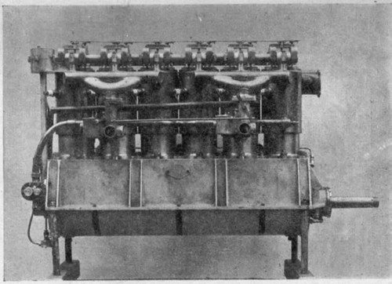
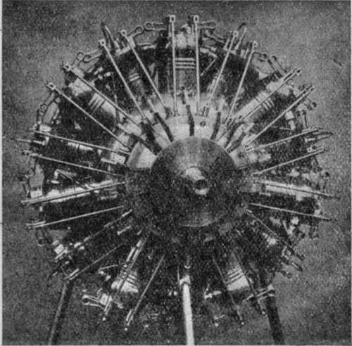

The Power Unit. Part 3
Description
This section is from the book "All About Flying", by Gertrude Bacon. Also available from Amazon: All About Flying.
The Power Unit. Part 3
Among famous aeroplane engines of the present day the Clerget and Le Rhone are other examples of the rotary type, where the cylinders are arranged ' radially ' (star fashion) and all revolve. In other motors although the cylinders are stationary they may still, for the sake of lightness, be radial (the Anzani is a case in point) ; or they may be arranged in pairs, each pair forming the letter V. A popular example of the 'V type' engine is the Renault, largely used on military machines. The Renault, by the way, is air-cooled by means of a fan revolving in front of the engine which drives air past the cylinders. Probably the best known of the English motors is the Green, of the stationary 'vertical' type, where the four or six cylinders are upright and ranged in line. The Green engines vary, according to size, from 30 to 120 horse-power; and among their famous feats Hawker's water-plane flight round Great Britain has been the most popular. The great naval sea-planes of the present day demand very powerful engines. Very largely and successfully used for this purpose is the great 'Salmson' —200 horse-power—a most impressive-looking piece of work with its fourteen cylinders, fixed but arranged radially, covered with bright copper water-jackets.
Green Engine (120 H.P.).
It is clearly impossible here even to name the famous engines—British and foreign—of the day. But the Power Unit of an aeroplane does not consist of the engine alone, and it would be small use to labour to improve the motor if its horse-power were to be squandered by an inefficient propeller ; and the task of the propeller designer is a complex and difficult one—not yet even fully understood.
His problem is to produce an aerial screw which shall force its way through the air with the greatest amount of 'thrust' to the least amount of air resistance—the 'thrust' of a propeller being the force with which it drives the air backwards or urges the aeroplane forwards.
And to obtain this he must shape his blades in particular fashion. The principle of the propeller is, as we know, the principle of the screw ; but the shape of a screw has always to be modified to suit the medium it is working in. The screw propeller of a ship is not of the same form as the screw which bores through wood ; and equally a ship's propeller would be no good to drive a flying machine.
'Salmson' Engine (200 H.P.).
For one thing, the 'pitch' has to be entirely different. The pitch of a screw is the distance it would travel forward in one complete turn supposing it were screwing into something solid, such as wood. But if it were screwing into soft soap, let us say, it would not go so far for a single turn, for the soap would yield to it, and it would push the soap back while it was pushing itself forward. The amount which the soap was pushed backwards would be called the 'slip.' In other words the 'slip' of a screw is the difference between the distance the screw should theoretically travel and its actual progress.
It follows that with a propeller screwing its way into such a tremendously yielding fluid as air, there must be a great amount of slip. We are made conscious of this fact in a tractor aeroplane when we sit behind the propeller and its draught blows over us. The technical name for this draught is the 'slipstream.'
The designer of an aerial propeller has to form his blades so that they may lay hold of as much air as possible in a given time. He has to work out, in fact, in his own way, the ' lift and drift' problem of the aeroplane constructor ; and he finds that the same laws hold true for planes and blades. He discovers that a long narrow blade is more efficient than a short broad one ; that the blade exercises more thrust if it is curved; and that, even as in the fixed planes, the greater the speed the smaller the angle of inclination. The tip of a propeller blade travels much faster in space than a point nearer the axis or boss; consequently if the pitch of the blade from axis to tip were uniform the air would be driven backwards with a greater velocity at the tip than at the axis. If, however, there is a suitable variation of the pitch along the blade, the air can be driven backwards at the same velocity at every point. A propeller blade, therefore, starts thick at the axis and fines away to paper-knife edge at the tip. Other things being equal, a large propeller turning comparatively slowly gives more thrust than a small one driven at high speed ; but a small propeller has the advantage that it can be built stronger for its weight. To be equally strong a large propeller must be made disproportionately heavy.
Travelling as it does at tremendous speed—its tips moving at hundreds of miles an hour—a propeller has to be very specially constructed. Formerly many propellers were made of metal; until presently it was found that metal had a tendency to become 'tired' and break in the air ; and a broken, jagged propeller blade flying at the speed of a projectile is an ugly customer to deal with. With wood there is not this risk. The wooden propeller is not made all of one piece but is 'laminated' —that is to say, built up of a number of layers, six or eight probably— generally of French walnut, most carefully selected and fixed together, not lying parallel but sort of fan fashion, so that the grain is best arranged to stand the strain set up by the rapid revolution. The whole is highly polished so as to render it as 'slippery' as possible in its passage through the air ; and it is, moreover, covered with a varnish that will withstand water, and hot castor-oil. Propellers are generally two-bladed, but four blades are not infrequently employed.
A propeller is a delicate and costly thing, liable to all sorts of accidents, some of an unlooked-for character. Lady passengers are warned to see that they have no loose portions to their dress when they go flying. A woollen cap blown into the propeller can chip its edge, a pin be firmly embedded in it. Propellers of sea-planes have their tips sheathed in metal to prevent their being splintered by waves splashing upon them ; and even the rain-drops of a heavy shower have been known to fray the leading edge until it looked as if it had been gnawn by rats.
In general the propeller acts as the fly-wheel of the aero engine, levelling up the 'jerks' as we have already described. Being made. of wood, however, it is liable to have a certain amount of 'spring' about it, and a vibration can be set up in it known as 'propeller flutter,' which may seriously lower the efficiency. We are speaking now, of course, of the non-rotary engine. In the Gnome the revolving cylinders form a much more effective fly-wheel, and the consequent absence of flutter is one great reason for the success of this form of motor.
Continue to: